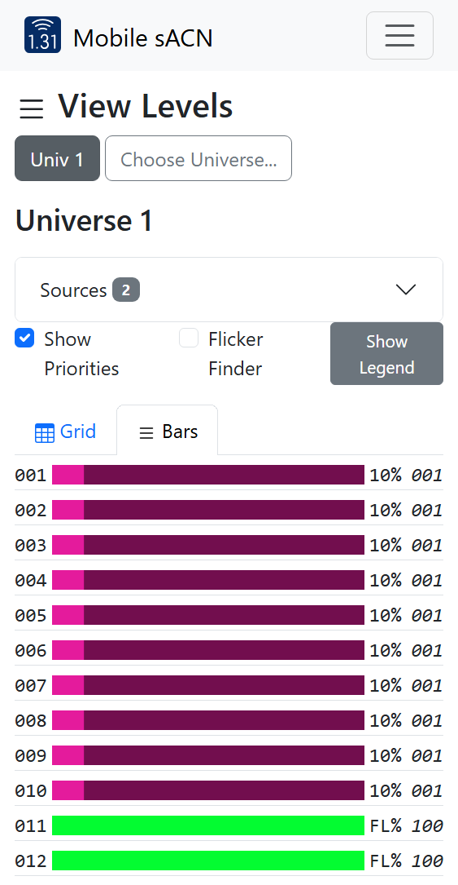
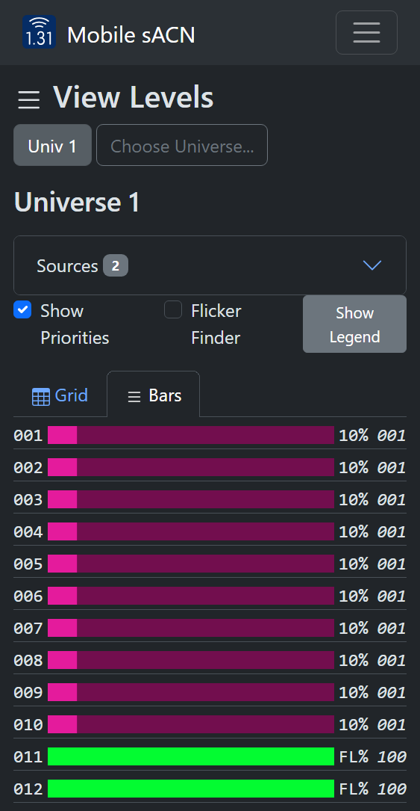
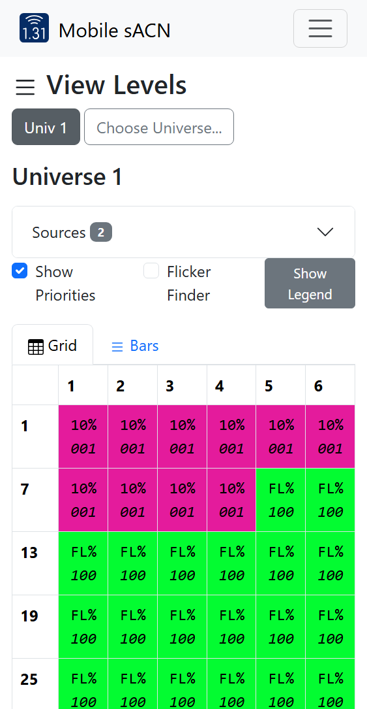
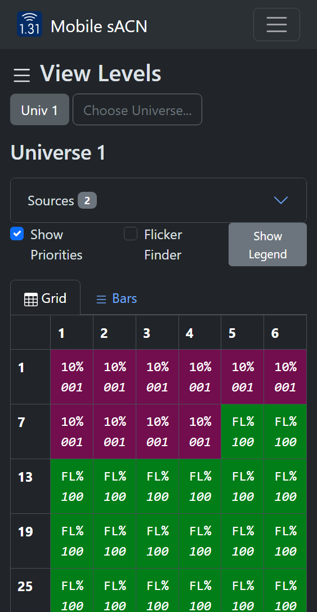
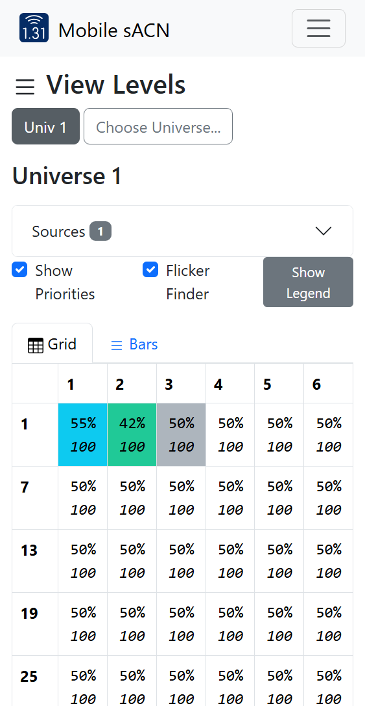
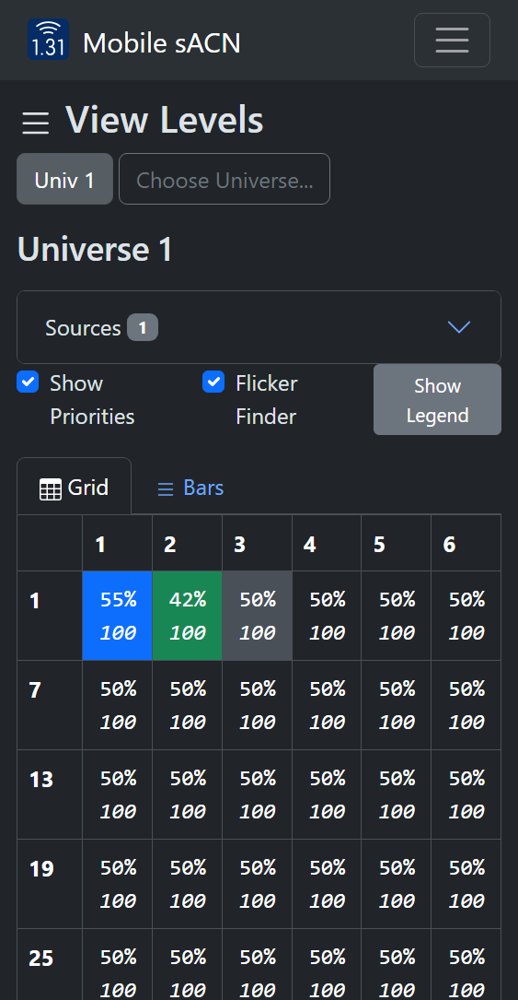

View Levels#
View Levels mode shows all sACN levels on the network and their merge result.
{kind=link}

{kind=link}

Usage#
If any sACN sources are active on the network, their levels are shown for the given universe. If more than one sACN source is active, the levels from all sources is merged following the standard sACN merge rules. Each source is assigned a different color; the color legend is shown by opening the “Sources” dropdown.
Universe Discovery#
Discovered sACN universes are shown as buttons. There is a small delay (usually around 10 seconds, but depends on the transmitters) from entering View Levels mode and universe discovery. Additionally, not all sACN transmitters make their transmitted universes discoverable. To select a universe that has not been discovered, press Choose Universe….
Modes#
Multiple display modes are available:
Bars#
Press Bars to show bars mode.
Bars mode#
Bars mode#
The given universe is shown as a list of bars, where each address has a bar showing its current level. The color of the bar corresponds to the color of the winning source. The address is shown on the left of the bar. The level and priority (if “Show Priorities” is checked) are shown on the right.
Grid#
Press Grid to show grid mode.
{kind=link}

Grid mode#
{kind=link}

Grid mode#
The given universe is shown as a grid with the first address in each row shown on the left. Much like Bars Mode, the color of the box corresponds to the color of the winning source. In each box, the level is shown above the priority.
Flicker Finder#
When “Flicker Finder” is checked, the display changes to show level differences relative to when the checkbox was checked.
Changes are marked with specific colors. The color legend can be shown by tapping Show Legend; it is also shown below:
Color |
Description |
|---|---|
Clear |
Level has not changed at all since Flicker Finder was activated. |
Blue |
Level is higher than when Flicker Finder was activated. |
Green |
Level is lower than when Flicker Finder was activated. |
Gray |
Level has changed since Flicker Finder was activated, but is now the same as its original value. |
{kind=link}

In this instance, address 1 has increased in value, address 2 has descreased in value, and address 3 has changed but returned to its original value.#
{kind=link}

In this instance, address 1 has increased in value, address 2 has descreased in value, and address 3 has changed but returned to its original value.#